Yokohamacho
Yokohamacho · Aomori
Yokohamacho
Highlighted on the Aomori map.
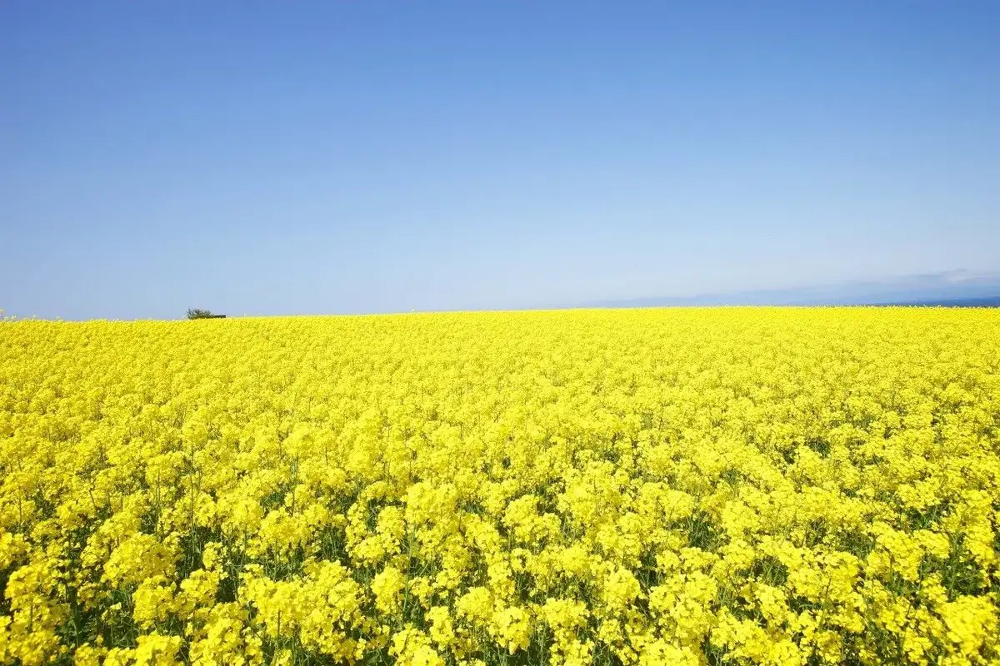
Stay
ペンション 風の谷
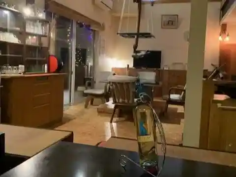
Pension Kaze no Tani
Pension in Yokohamacho, Aomori.
民宿 菜の花館
Minshuku Nanohanakan
Guesthouse (minshuku) in Yokohamacho, Aomori.
砂浜海岸コテージ
Sunahama Kaigan Cottages
Beach cottages, April to November in Yokohamacho, Aomori.
ビジネスイン横浜
Business Inn Yokohama
Business hotel in Yokohamacho, Aomori.
民宿 青木
Minshuku Aoki
Guesthouse (minshuku) in Yokohamacho, Aomori.
Dining
湧水亭
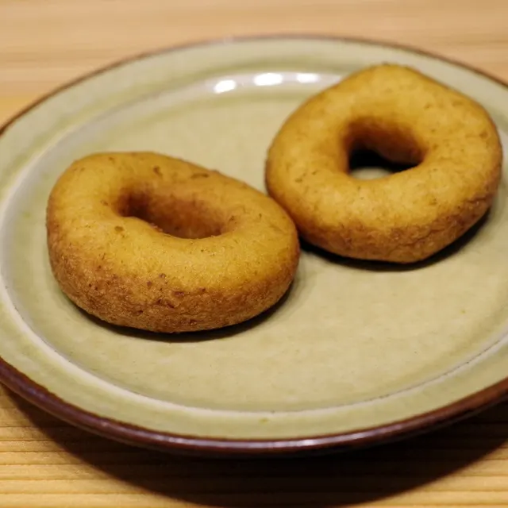
Yuusui Tei
はまなす
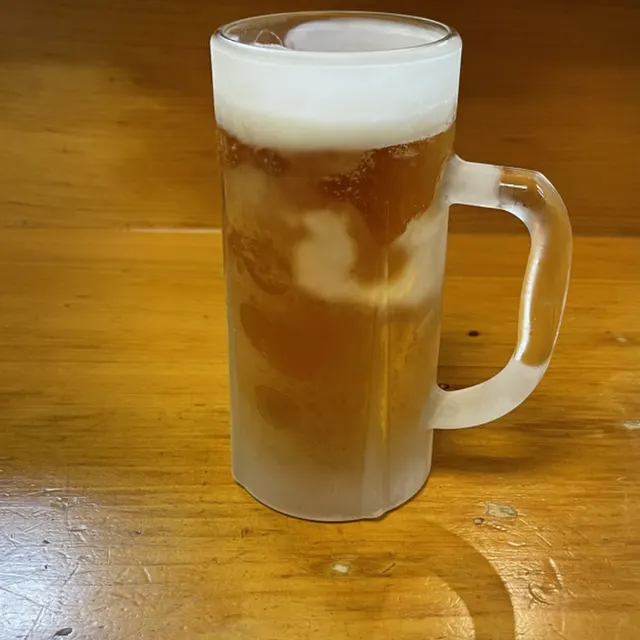
Hamanasu
まとい
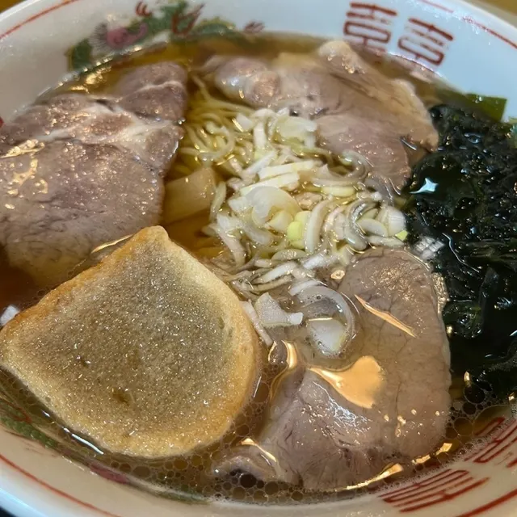
Matoi
ペンションVento風の谷
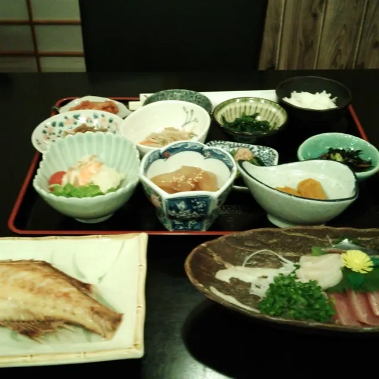
Penshon Vento Kazenotani
白樺ラーメン
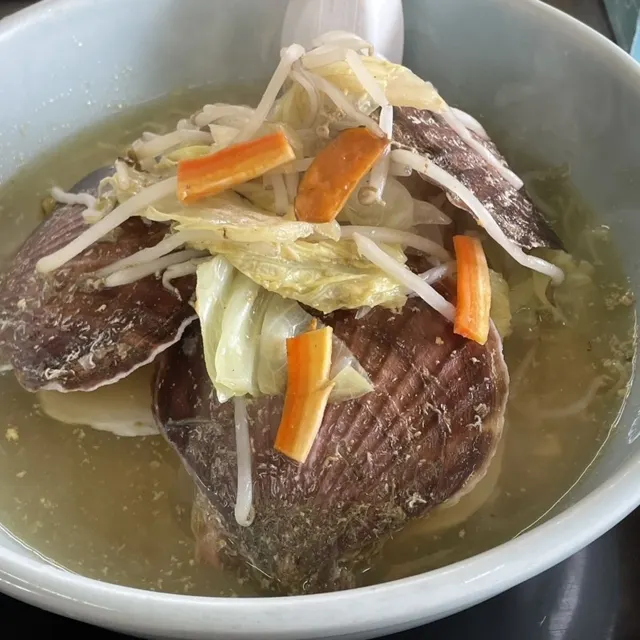
Shirakaba Raamen
やまじゅ
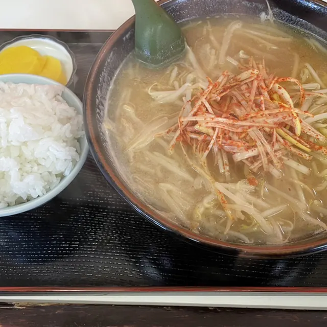
Yamaju
まきば食堂
Makiba Shokudou
手打ちそば･うどん処 檜屋
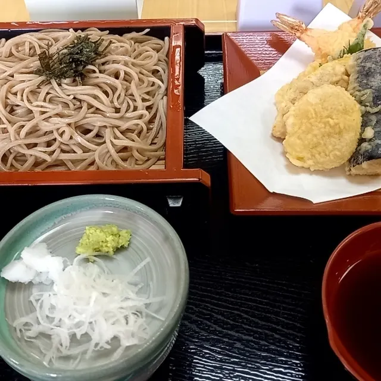
Teuchi Chisoba Chisoba Udon Tokoro Hinoki Ya
じなりや
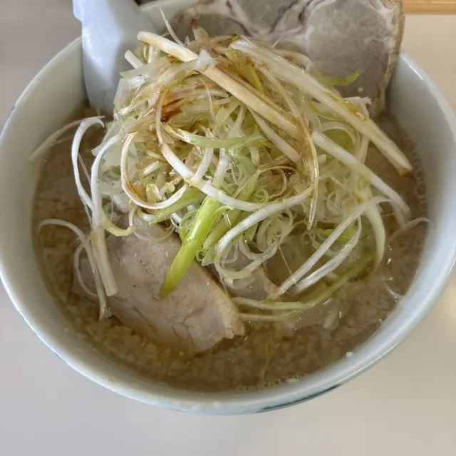
Jinariya
菜の花館
Na No Hana Kan
道の駅 よこはま 菜の花プラザ
Michi No Eki Yokohama Na No Hana Puraza
はまなすドライブイン
Hamanasu Doraibuin
道の駅 よこはま
Michi No Eki Yokohama
LAWSON 横浜町道の駅前
Lawson Yokohama Choudou No Ekimae
鈴木食堂
Suzuki Shokudou
トラベルプラザサンシャイン
Toraberupurazasanshain
レストラン 鮮菜
Resutoran Sen Na
Sights
Canola-Blossom Fields in Yokohama Town
Canola blossoms have a brilliant yellow color that lifts the spirits. Yokohama Town in Aomori Prefecture has among the largest planted areas of these beautiful flowers in all of Japan.
Yokohama Roadside Station
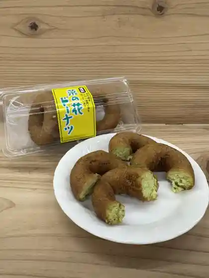
Yokohama Town`s Nanohana Plaza Roadside Station is located along National Route 279.
Travel Plaza Sunshine
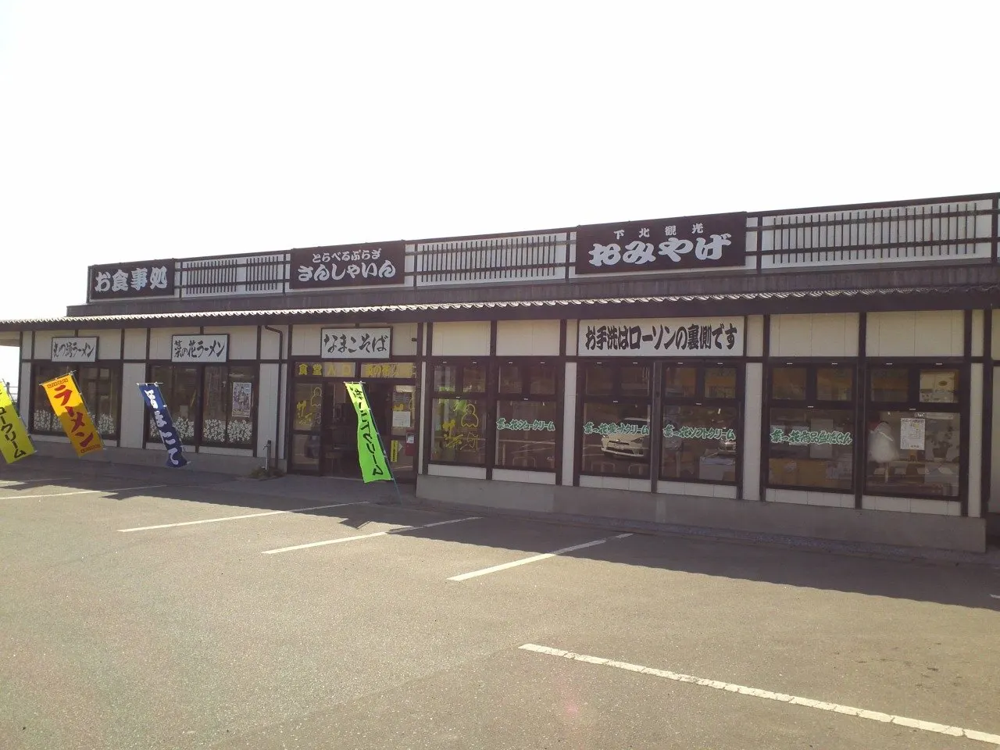
Souvenir shop and diner on Route 279 overlooking Mutsu Bay.
Shizen Taiken Land Shizenen
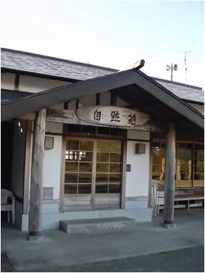
Nature learning facility near 50 hectares of rapeseed blossom fields.
Mt. Fukkoshi Eboshi
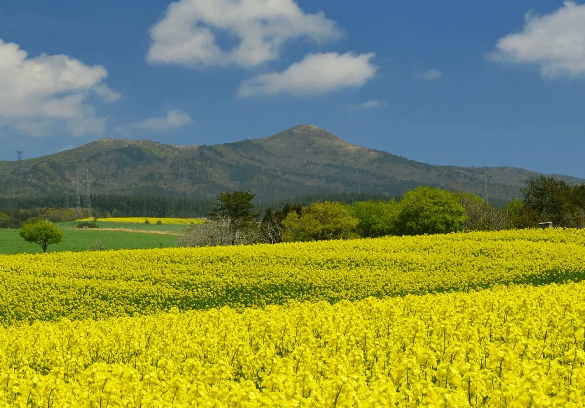
507.8 m mountain among Tohoku's 100 famous peaks, an easy hike.